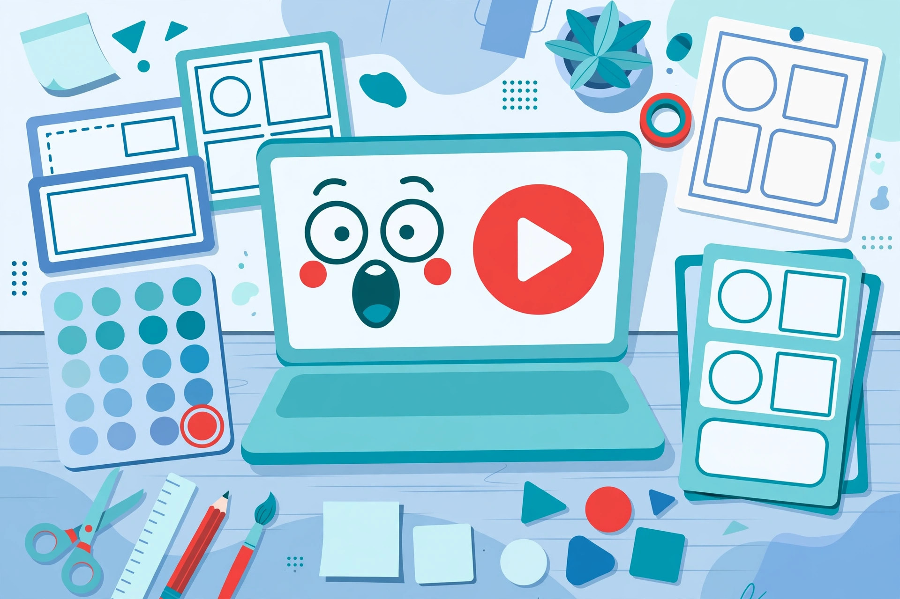

The worst-performing video I ever uploaded was also one of the best I ever made. The filming was fine, the advice was solid — and the title was "My Thoughts on Productivity, Part 3". It earned something like eleven views, most of them probably me checking whether it had earned any views. The video didn't fail. The invitation did. People can't watch what they never click, and they can't click what never makes them curious.
That lesson reshaped how I think about titles. A title isn't a label for the video; it's a promise made to a stranger who owes you nothing and is one scroll away from forgetting you exist. This guide is everything I've learned about making that promise well — ambitious enough to earn the click, honest enough to survive it.
A title that promises everything promises nothing. "Everything about fitness" is a topic, not a reason to click — the viewer can't tell what they'll walk away with, so they walk away immediately. "How I lost 10kg without a gym" is one promise, made to one specific viewer, with one clear reason to care. Same creator, same camera, completely different invitation.
The discipline is choosing. Most videos genuinely contain three or four sellable points, and the temptation is to cram them all in — "My Routine, Diet, Supplements and Mindset Journey!" Every added promise dilutes the others, because a scrolling stranger gives you about a second of pattern-matching: does this speak to me, yes or no? One sharp promise answers that question instantly. Pick the single strongest reason to watch, and let the rest of the video be a pleasant surprise instead of a crowded headline.
My working test: can a stranger repeat the promise back after one glance, in their own words? "It's about losing weight without a gym." Clear. If they hesitate — "it's about, um, fitness stuff?" — the title hasn't chosen yet, and neither will they.
"I tried this for 30 days" is curious. "I tried cold showers for 30 days" is curious AND clear — the viewer knows exactly what they're getting and still wants to know how it ended. That combination is the sweet spot of honest titling: enough information to trust the click, enough withheld to make the click necessary.
Pure curiosity — "You won't believe this", "Watch till the end!" — feels like a trap, mostly because it usually is one. It also selects for the wrong audience: everyone clicks, nobody stays, and the algorithm learns your video disappoints people. Clarity is what keeps curiosity honest. It tells the right viewer "this is for you" and politely tells everyone else to keep scrolling, which is a favour to both of you.
It feels backwards the first time. By the third video, you'll wonder how you ever filmed first and titled later.
"Amazing", "incredible" and "ultimate" are claims anyone can make, which is exactly why nobody believes them. Numbers, timeframes and results are proof: "in 10 minutes", "after 30 days", "with $0", "from 0 to 1,000". Proof converts a boast into a bet the viewer can evaluate — and a title that can be checked is a title that gets trusted.
This comes with one firm rule: when you can't prove it, don't promise it. If the video doesn't actually contain the $0 method, the title doesn't get to say $0, even with an asterisk in your heart. Say what the video genuinely teaches, in the most specific language available. Specificity is magnetic on its own — "the 4-minute warm-up I do before every run" outperforms "great warm-up tips" without a single adjective, because it sounds like something a real person actually does.
Notice what proof does to your filming, too. Once the title promises "30 days", you have to live the 30 days. Titles written honestly become a quiet quality-control department for the whole channel.
If you remember one rule from this page, make it this one. If viewers leave in the first minute because the video isn't what the title promised, the video performs worse than a boring title ever would — and so, quietly, does your next one. Watch time and retention are the algorithm's memory: a title that keeps its promise teaches YouTube that your packaging can be trusted, and that trust compounds.
Clickbait inverts the whole deal. It wins a spike of clicks from everyone, then loses the viewers, the trust, and eventually the channel's distribution. I've watched creators chase one viral-but-dishonest title for months afterwards, wondering why regular videos underperform. The answer is unglamorous: the audience learned. Audiences always learn.
Practically, this means the most dangerous moment for a title is after editing, when the video has drifted from the plan. Re-check the promise against the finished cut. If the video changed, the title changes — never the other way around.
Title and thumbnail are read together, in the same glance, so they should behave like one sentence split across two media. The rule: they add information, never repeat it. If the thumbnail shows the result (the finished cake, the before-and-after), the title can ask the question or name the struggle. If the title states the result, the thumbnail can show the reaction, the obstacle, or the moment it almost went wrong.
Two pieces saying the same thing — title "I Built a Treehouse!" beside a thumbnail of a treehouse with the words "TREEHOUSE!" — waste half your packaging and, worse, look like shouting. Keep thumbnails simple enough to read at postage-stamp size: one subject, strong contrast, at most a few words, and only words the title hasn't already used. Then zoom your draft down to 10% on your phone screen. If you can't tell what it is, neither can a commuter scrolling at speed, and they are your real audience.

Good titles aren't found, they're iterated. The method is simple and unforgiving: change one element at a time — the hook, the number, or the audience — never all three. When a title performs, you then know why, and a lesson you can name is a lesson you can repeat. Change everything at once and even success teaches you nothing.
Start before publishing, not after. Write your ten titles, pick the strongest two, and sanity-check them against the promise test from section 1. After publishing, give the video a fair window — early numbers are noisy — then look at the click-through rate beside the retention, never alone. A high CTR with a retention cliff means the packaging overpromised. A modest CTR with strong retention means the video is good and the title is the bottleneck worth another pass. Three signs the title — not the video — is your problem:
Channels that test this way improve a little every month; channels that guess stay stuck at the same view counts, blaming the algorithm for a packaging problem.
Title and thumbnail writing is a real, sellable service for growing channels, and it's the cheapest growth a creator can buy — no ad spend, just better packaging on videos they've already made. Channels with decent content and weak titles are everywhere, which makes them ideal first clients: the improvement is visible in their own analytics within a few uploads, and visible results are what turn a one-off job into a monthly arrangement.
It's also the skill behind your own channel, if you make videos. A better title is free distribution on work you've already done, and unlike most improvements, it compounds — every video in your back catalogue can be re-titled, and each one that climbs brings new viewers to everything else. To brainstorm faster, I use the free YouTube Title + Description + Hashtag Generator to get raw candidates, then apply the rules in this guide to pick and sharpen the winner. The tool proposes; the promise test disposes.
A title has two jobs that must never be separated: earn the click from the right viewer, then deserve it in the first minute. Promise one thing, make it curious and clear, prove it with specifics instead of adjectives, let the thumbnail add what the title didn't, and test one change at a time. Do that honestly and something lovely happens — your best videos stop dying in the feed, and your channel starts growing at the speed of your content instead of the speed of your luck. Start with the video you're proudest of that nobody watched. Its title, not its content, is probably what's broken.
Short enough to survive a phone screen. Titles start getting cut off around 50–60 characters on mobile, so front-load the promise: the specific, interesting part belongs in the first few words, not after a series name or episode number. That said, length is a guideline, not a law — a clear 65-character title beats a vague 40-character one. Write the promise first, then trim words that add nothing. If a word isn't earning its place by the second reading, it goes.
Short term, it can inflate one video's click count. Medium term, it costs you the two things a channel actually runs on: viewer trust and the algorithm's confidence in your packaging. People remember being tricked by a channel, and retention data remembers it even better. Every creator I know who's lasted uses curiosity, not deception — the honest version of the same skill. If a title needs the video to be something it isn't, the correct fix is a better title or a better video, never a bigger lie.
Ten is a good working number. The first two or three will be the obvious ones — usually a plain description of the topic. The interesting candidates tend to show up around five to eight, once you've pushed past describing the video and started selling its promise. Write them before filming when you can, so the winner can shape the video itself. Then pick using the repeat test: the title a stranger can accurately summarise after one glance is the one that will work in the feed.
That pattern — healthy click-through, weak retention — is the signature of a promise mismatch. Either the title overpromised, or the video takes too long to start delivering on it. Check where viewers leave: a cliff in the first 30 seconds usually means the opening didn't confirm the title's promise fast enough. Fix the opening to show or state the promised thing early, and soften the title if the video genuinely can't back it. Diagnose honestly; the analytics are describing viewer experience, not attacking you.
Almost never word-for-word. The title and thumbnail are read in the same glance, so repetition wastes your only two chances to add information. If the title states the result, the thumbnail can show the reaction or the obstacle; if the thumbnail shows the result, the title can carry the question or the stakes. A few short words on a thumbnail are fine — sometimes essential — but make them words the title hasn't used. Zoom the pair down to phone size and check they still read as one clear, combined message.